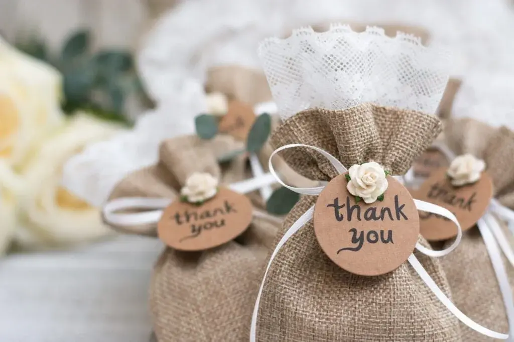

Le tout nouveau phénomène de mode pour votre mariage en Nouvelle Aquitaine est aujourd’hui le Wedding Bag.
Un allié parfait qui ravira vos invités.

Nouvelle tendance !
Dérivé du Welcome Bag, le Wedding Bag, de sa traduction le sac de bienvenue, est le moyen idéal de casser la tradition de la petite sacoche de dragées comme cadeaux pour les invités à votre mariage. Généralement sous la forme de tote-bag, il a pour but d’être rempli de petits cadeaux minimalistes ainsi que de nombreux accessoires dont auraient besoin vos invités durant votre mariage. Une manière simple et écologique de faire plaisir à tout ce petit monde.
Votre sac peut bien sûr être personnalisé en y indiquant par exemple vos initiales ainsi que la date du jour J. Il peut également représenter votre thème, qu’il soit chic, vintage, romantique ou encore bohème. Le Wedding Bag est rempli de nombreux petits objets comme les traditionnelles dragées ou bien un éventail contre la chaleur, des mouchoirs contre les émotions, un programme détaillé de la journée pour les impatients ou encore des décorations de véhicules pour les « car lover ».
De multiples choix !
Les choix sont multiples et peuvent être à votre effigie ou à celui de votre mariage. Un bon moyen pour que cette journée reste gravée dans votre mémoire ainsi que celle de vos invités. Dans cette crise sanitaire, vous pouvez également y glisser du gel hydroalcoolique ou encore des masques personnalisés pour mieux lutter contre le virus sans se restreindre.
Un cadeau pour les impatients
Donné à un moment spécifique de votre journée, il peut également permettre de mieux faire patienter vos convives. Ce peut être durant la séance photo ou alors dès leur arrivée juste avant votre cérémonie. L’idéal est de trouver le bon moment pour qu’ils puissent découvrir ce Wedding Bag en toute tranquillité.

Pas de panique !
En tant que Wedding planner et Wedding designer, je suis spécialisée sur le sur-mesure et je peux être à votre écoute pour tous conseils et également vous fournir mes services pour rendre votre journée inoubliable !
Lovely Day Event c'est plusieurs types de prestations
L'organisation de mariage
Je vais intervenir sur toutes les étapes de vos préparatifs et vous guider dans vos choix. Je suis force de proposition pour que votre mariage ne ressemble qu’à vous.
Coordination le jour J
Je serai le chef d’orchestre pour gérer les différents prestataires, la mise en place de votre décoration et le déroulement de cette belle journée.
Décoration de mariage
Créative et passionnée, je suis certifiée Wedding Designer et je conçois une ambiance scénographique qui correspond au thème de votre mariage. La décoration est comprise dans l'accompagnement Signature, ou proposée en option avec la coordination du jour J.